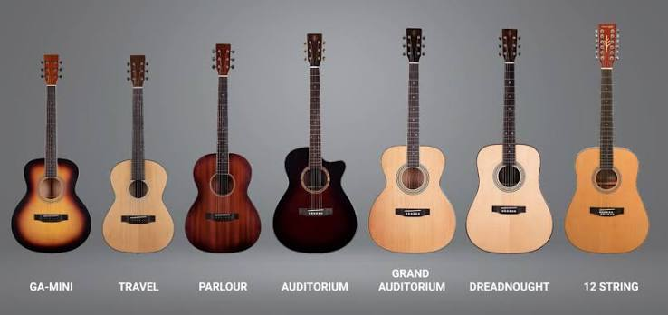

VIOLÃO
O violão é um instrumento musical de cordas beliscadas, composto por uma caixa de ressonância
em
formato
de oito,
um braço com trastes e geralmente seis cordas.

3 curiosidades sobre o violão
Nome do Violão
A palavra "violão" surgiu no Brasil como um aumentativo para a viola, já que o novo instrumento trazido era maior e encorpado
Cordas do violão
Cordas de bicho: Antes da invenção do nylon, as cordas dos violões eram feitas de tripa de animais (geralmente de carneiro ou ovelha).
Formato do violão
O corpo com curvas acentuadas não é por acaso; ele foi desenhado para se encaixar perfeitamente na perna de quem toca e para ajudar na acústica do som.